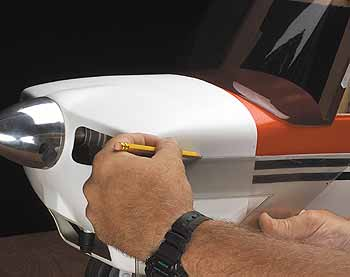
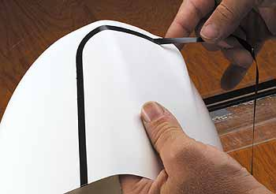
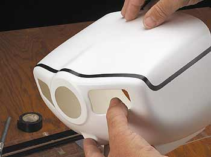

|
|
Окраска из баллончика -- это просто Простая техника для блестящих результатов | ||||
| |||||

Подготовьте вашу маскирующую ленту разрезав изоленту на тонкие 1/4 дюйма (6 мм) полоски. Верхняя красная часть моего капота имеет спереди два закругленных угла и поэтому требуется их обогнуть маскирующей лентой. Тонкие полоски позволяют это сделать.

После того как краска просохнет за ночь, поместите капот на модель убедившись, что он установлен правильно относительно файервола и спиннера. Используйте линейку чтобы нарисовать мягким карандашом направляющие линии, так чтобы разноцветные части соответсвовали цветовой схеме на фюзеляже.

Используя направляющие линии в качестве указания, наложите изоленту на внешнюю или "маскируемую" часть направляющих линий и только лишь слегка натяните их вдоль криволинейных граней. Если ленту натянуть слишком сильно, она приподнимется до того, как вы закончите покраску детали.

Проверьте ленту чтобы убедиться, что она правильно спозиционирована.
Если вам не нравится, как получилось, удалите ее и установите заново.
| 1 • 2 • 3 |